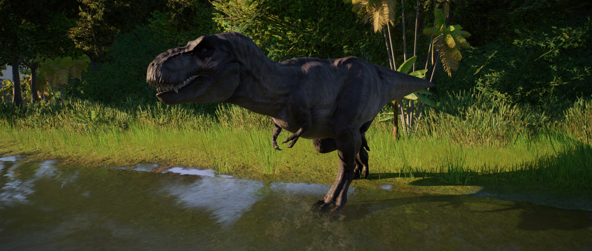

The most famous of all dinosaurs, Tyrannosaurus rex enjoys a fearsome reputation around the world thanks to its size, power and aggression – a status borne out by its name, which translates to ‘King of the tyrant lizards’. At around 13.5m in length and over eight tonnes in weight, Tyrannosaurus rex was the apex predator of its time, with the most powerful jaw known to science and rows of large, serrated teeth.